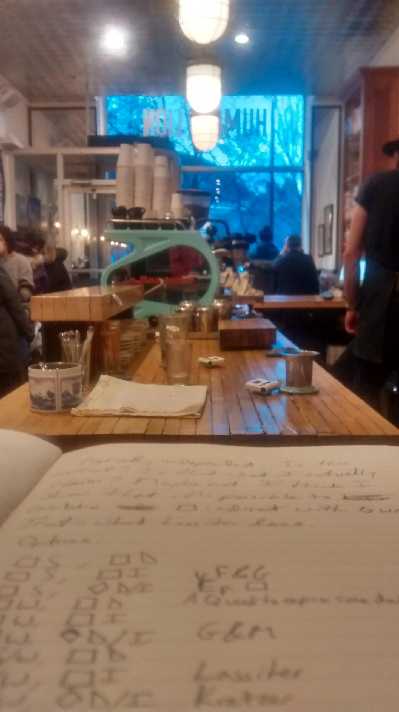
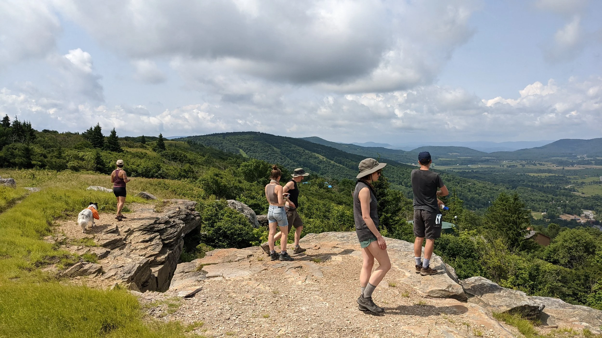

About Me

I have held positions as a research scientist in linguistics at several institutions. Most recently I was at the Leibniz-Centre for General Linguistics (ZAS) in Berlin, Germany, where I worked in Manfred Krifka's ERC project "Speech Acts in Grammar and Discourse (SPAGAD)." Before that I was at the University of Maryland – College Park, in the Department of Linguistics, where I worked with Valentine Hacquard, Jeffrey Lidz, and Alexander Williams. I did my PhD at McGill University, in the Department of Linguistics, where I was advised by Michael Wagner, Bernhard Schwarz, and Luis Alonso-Ovalle.
In addition to my research, I enjoy teaching, advising, and helping to foster the intellectual life of my local linguistics community. At every stage of my career I have organized and actively participated in reading groups and presentation groups in my local community.

Backpacking in the Dolly Sods Wilderness in West Virginia
When I'm not doing research, I spend time with my wife, Rebecca Fishow, the author of The Trouble with Language, and our son. We like to go hiking and visit our friends. I also write music and fiction. To me, making linguistics artifacts (articles, slides, handouts, posters, experiments) is on a continuum with making more purely aesthetic artifacts (songs and stories). They are produced in the service of different goals, but both require time and attention, and lots and lots of revision according to your intuitive preferences.